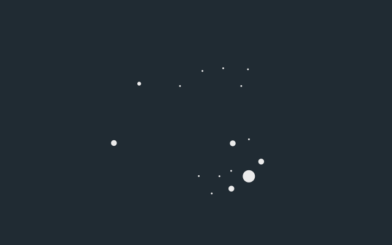
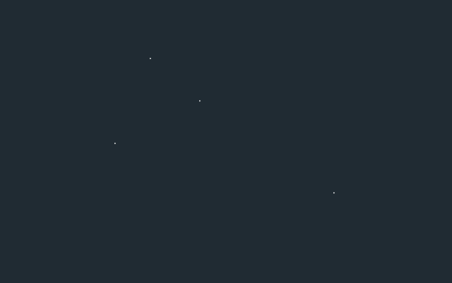
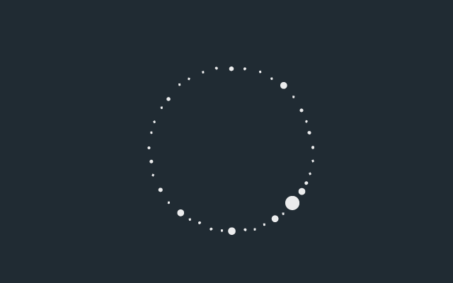

The Sky Milk Project
Sky Milk is a not-for-profit organization that aims to obtain counterterrorism intelligence and bring extremist militant insurgents into public scrutiny through remote espionage, human and computer analysis of imagery from threatened areas, and detailed investigative reporting.
01. Extracting satellite imagery of hotspot conflict areas, daily

Automated web scraping from intelligence agencies, news corporations, and civilian reports leads to the tagging of suspect geographic locations for further analysis. Aerial coverage, in full-color and near infrared, of these interest areas captured by satellites is stored by Sky Milk, ranging in resolution from 100 meters down to 72 centimeters of coverage per pixel depending on the type of study required.
02. Classifying unusual and suspicious activity through data inferencing

Building alterations and new construction, along with identification of equipment and land use consistent with extremist movements trigger human intervention to develop data-driven insights from satellite imagery. The conclusions are then used for model training and strengthening pattern analysis software to identify future threats before they emerge.
03. Disseminating information on threats to peace

As a case develops, Sky Milk will release satellite imagery for users to manually tag to strengthen the crisis classifier algorithm (manual tagging pending human approval process). After data extraction and full analysis of an area, Sky Milk will publicly release a detailed report on the insights gained and the investigation underwent. Sky Milk will alert authorities on unsanctioned activity where there is risk to human life.